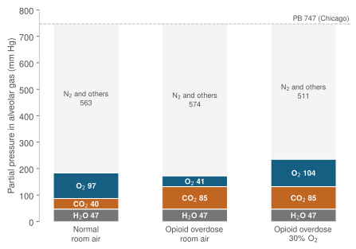
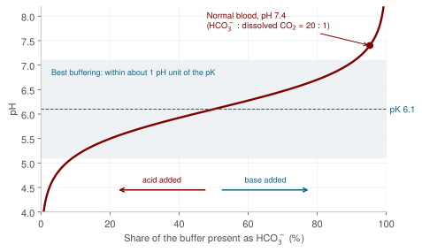
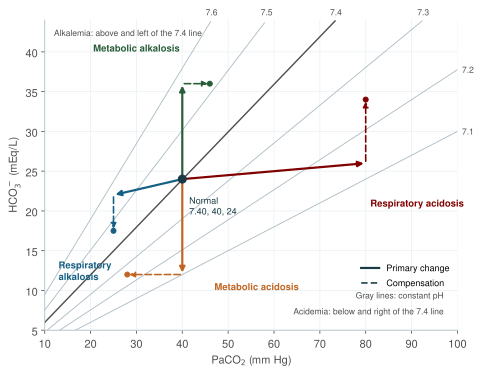
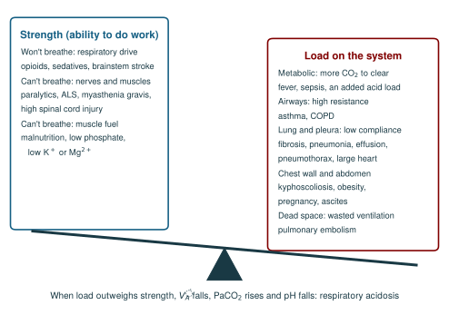
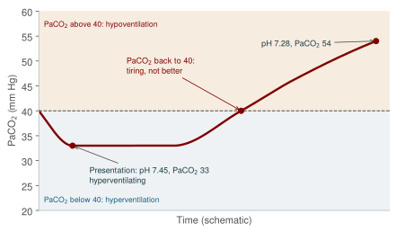

26 Pulmonary Acid Base
Reading a blood gas from the lung’s side
- Read an arterial blood gas in the course order: pH, PaCO2, PaO2, saturation.
- Explain how the CO2 and bicarbonate buffer links the lung and the kidney, without calculating pH.
- Name the “emia”, the primary “osis”, and what the body does to compensate.
- Describe how the lung compensates for a metabolic acidosis and a metabolic alkalosis, and why the second response is small.
- Explain respiratory acidosis as an imbalance between strength and load, and list causes on each side.
- List the causes of respiratory alkalosis, starting with hypoxemia.
Names, dates and the exact values in figure captions are context, not things to memorize.
The earlier chapters followed air into the alveoli and gas across the barrier. This one looks at a consequence in the blood. CO2 is an acid, and the lung sets how much of it stays in the body, so every change in ventilation changes the blood’s pH. Clinicians look at blood gases constantly: in an emergency on any ward, someone will hand you one and ask whether to worry. The goal here is narrow and practical. You should be able to look at a blood gas with one disorder, say what the primary problem is, and say what the body is doing about it. The kidney’s side is treated as a black box here; the renal block opens it.
26.1 A blood gas
The lecture opens with a 27-year-old woman found unresponsive after heroin use. She does not wake to a sternal rub and her pupils are pinpoint. While she is being treated with naloxone, an arterial blood gas comes back:
pH 7.08 / PaCO2 85 / PaO2 42 / SaO2 75%
A blood gas is always reported in that order. Blood is usually drawn from the radial artery, because arterial blood has just left the lungs and heart; venous blood has had acid added and O2 removed by whatever tissue it drained, so it says less about gas exchange. All the values are arterial (“little a”), because the alveolus cannot be sampled.
Memorize the normal values now. You will use them for the rest of the block.
| Value | Normal |
|---|---|
| pH | 7.40 |
| PaCO2 | 40 mm Hg |
| HCO3− | 24 mEq/L (reported with the gas or alongside it) |
| PaO2 | about 80 to 100 mm Hg, lower with age |
| SaO2 | close to 100% |
Laboratories differ on how wide the normal pH range is. The lecture slides call a pH below 7.37 low and above 7.42 high; the course notes use 7.35 and 7.45. Both center on 7.40, and for the gases in this chapter the direction away from 7.40 is what you read.
PaCO2 and alveolar PCO2 are essentially equal, so a blood gas gives you PACO2 directly. PaO2 is not always equal to alveolar PO2. You calculate PAO2 with the alveolar gas equation and compare the two: the difference is the A–a gradient. In a healthy lung both gases equilibrate across the barrier, and PaO2 still ends up a few mm Hg below PAO2 because a small share of the blood bypasses gas exchange and V/Q varies across the lung. Those lower PaO2 far more than they raise PaCO2. The Ventilation and Perfusion chapter explains why.
26.1.1 Hypoventilation causes hypoxemia with normal lungs
Work through her oxygen first. In Chicago, with PB 747 mm Hg, R 0.8 and room air:
\[P_{AO_2} = (P_B - P_{H_2O})\,F_{IO_2} - \frac{P_{aCO_2}}{R} = 0.21\,(747 - 47) - \frac{85}{0.8} \approx 147 - 106 = 41 \text{ mm Hg}\]
Her PaO2 is 42. The A–a gradient is essentially zero (the PaO2 sitting a hair above PAO2 comes from assuming R is exactly 0.8). Her chest X-ray is clear. Nothing is wrong with her lungs. She is breathing so little that CO2 has built up in her alveoli, and at a fixed total pressure, more alveolar CO2 leaves less room for O2 (Figure 26.1).

The low saturation is what gets attention. Put O2 on her and her saturation rises to normal, because raising FiO2 raises PAO2. Her PaCO2 has not changed, and the acidemia that comes with it can kill her. The fix for her is to make her breathe: naloxone reverses the opioid. With every blood gas, ask three things: what is the oxygen, what is the CO2, and does the patient look able to keep this up?
26.2 Why pH matters
Proteins work over a narrow pH range, and receptors, enzymes and channels all change shape when it moves.
- Too acidemic (pH too low): cardiac function is depressed, tissues stop responding to catecholamines (the body’s own and those given as drugs), and the patient can die. Critical acidemia is a common final pathway in the ICU.
- Too alkalemic (pH too high): muscle tightening (tetany), seizures, arrhythmias and death. This is less common.
In health the pH stays very close to 7.40.
26.3 The CO2 and bicarbonate buffer
An acid is a molecule that can give up a proton:
\[\text{HA} \rightleftharpoons \text{H}^+ + \text{A}^-\]
The Henderson-Hasselbalch equation relates pH to the ratio of the base form to the acid form: pH = pK + log([A−]/[HA]). (The course notes print this ratio upside down; the base form goes on top, as in the bicarbonate form below.) A buffer resists changes in pH when acid or base is added. It does that best within about one pH unit of its pK (Figure 26.2).

The buffer that matters for the lung is CO2 and bicarbonate:
\[\text{CO}_2 + \text{H}_2\text{O} \;\overset{\text{CA}}{\rightleftharpoons}\; \text{H}_2\text{CO}_3 \rightleftharpoons \text{H}^+ + \text{HCO}_3^-\]
Carbonic anhydrase (CA) speeds the first step. Plasma has almost none, so the reaction runs mostly inside red cells (see Transport of O2 and CO2). Say “bicarb” for bicarbonate; everyone does.
Written for this buffer, with 0.03 the solubility of CO2 in blood (mmol/L per mm Hg):
\[\text{pH} = 6.1 + \log\frac{[\text{HCO}_3^-]}{0.03 \times P_{aCO_2}} = 6.1 + \log\frac{24}{0.03 \times 40} = 6.1 + \log 20 = 7.40\]
The arithmetic checks out, and that is all it is here: a check. Clinicians who read thirty blood gases a day never calculate it, and you will not have to either. Read the equation for its directions:
- HCO3− is on top. Raise it and pH rises; lower it and pH falls.
- PaCO2 is on the bottom. Raise it and pH falls; lower it and pH rises. CO2 behaves as an acid.
- pH depends on the ratio. If both rise or both fall, pH moves back toward 7.40.
The pK of 6.1 is far below 7.40, so blood sits near the top of the buffer curve, outside the range where a buffer works best (Figure 26.2). On its own the pair would be a weak buffer at 7.40. It works because the body controls both halves of the ratio, with two controllers. The lungs set PaCO2 and can change it within seconds to minutes by breathing faster or deeper. The kidneys set HCO3−, using transporters you will meet in the renal block, and they need hours to days. Strictly, the lungs stand for the whole respiratory system (lungs, chest wall and the muscles that move them) and the kidneys for the whole metabolic side, including the tissues that make acid. So the disorders are called respiratory and metabolic, not “lung” and “kidney”.
26.4 The four primary disorders
Each disorder is named for the variable that moved first.
| Disorder | pH | Primary problem | Compensation |
|---|---|---|---|
| Respiratory acidosis | low | high PaCO2 | kidney raises HCO3− |
| Metabolic acidosis | low | low HCO3− | lung lowers PaCO2 |
| Respiratory alkalosis | high | low PaCO2 | kidney lowers HCO3− |
| Metabolic alkalosis | high | high HCO3− | lung raises PaCO2 |
Compensation always acts on the other variable and moves it in the same direction as the primary change, because that restores the ratio. If PaCO2 is high, the kidney raises HCO3−; if HCO3− is low, the lung lowers PaCO2. Figure 26.3 shows all four as paths on a plot of HCO3− against PaCO2.

Compensation never restores a normal pH. It moves the pH toward 7.40 and stops short. That makes blood gases easier to read, because compensation never overshoots. If a patient with a primary acidosis turns up alkalemic, a second process is present. A patient with diabetic ketoacidosis who is breathing as hard as she can will still be acidemic; if her gas shows an alkalemia, look for something else, such as vomiting (a metabolic alkalosis) or an ingestion that drives breathing.
Respiratory compensation is fast. Renal compensation takes hours to days, so the size of the HCO3− change tells you how long a respiratory problem has been going on. A patient with a PaCO2 of 80 and a very low pH has a new problem and needs the ICU. A patient with the same PaCO2 and a pH near normal has had time to compensate and may not need immediate action. There are formulas for the expected compensation. They belong to the renal block and are not part of this lecture.
The lung’s two responses are not equal. It can blow off a great deal of CO2 to compensate for a metabolic acidosis. Its compensation for a metabolic alkalosis is small. The high pH does lower the chemoreceptor drive, ventilation falls and PaCO2 rises, but hypoventilation also lowers PaO2, and the falling PaO2 drives ventilation back up through the peripheral chemoreceptors. The Control of Ventilation chapter covers those receptors.
In the recording, the small compensation for a metabolic alkalosis is explained as breathing less being “unnatural”, something you have to do consciously. The response is automatic: the chemoreceptors sense the higher pH and drive falls. It stays small because hypoventilation lowers PaO2, and hypoxemia limits it, as the course notes say.
26.5 Emia, osis, and what the body does
Read every blood gas with three questions.
- What is the emia? Is the pH low (acidemia) or high (alkalemia)? This is the net result of everything going on.
- What is the primary osis? A low pH means either a high PaCO2 (respiratory acidosis) or a low HCO3− (metabolic acidosis). A high pH means either a low PaCO2 or a high HCO3−. Look at the PaCO2 first and see whether it matches the pH, then use the HCO3− as the check. You can also do it the other way round; both work.
- What is the body doing to compensate? Has the other variable moved away from normal in the same direction?
A patient can have several processes at once: ketoacidosis, a pneumonia that limits CO2 clearance, and dehydration adding a metabolic alkalosis, all pulling the pH in different directions. Mixed disorders wait for the renal block. Each gas in this lecture has one primary disorder.
The lecture’s four practice gases, worked through:
| Gas (pH, PaCO2, HCO3−) | Emia | Primary osis | Compensation |
|---|---|---|---|
| 7.08, 85, 26 | acidemia | PaCO2 high: respiratory acidosis | HCO3− barely above 24: little compensation yet, which fits a problem hours old (the kidney needs days) |
| 7.20, 26, 11 | acidemia | HCO3− low: metabolic acidosis | PaCO2 below 40: the lung is blowing off CO2 |
| 7.47, 45, 35 | alkalemia | HCO3− high: metabolic alkalosis | PaCO2 a little above 40: a small rise |
| 7.50, 28, 20 | alkalemia | PaCO2 low: respiratory alkalosis | HCO3− below 24: some renal compensation |
These are the lecture’s values, rounded; if you check them with Henderson-Hasselbalch, each pH comes out a few hundredths different, which changes no reading.
The first gas is the opioid patient. A metabolic acidosis comes from an added acid, such as lactic acid when tissues are poorly perfused or ketoacids in diabetic ketoacidosis. A metabolic alkalosis comes from loss of H+, as in vomiting, or from volume loss.
A PaCO2 of 45, as in the third gas, may be flagged as normal by some laboratories. The body controls pH so tightly that the small rise is still a real compensation: a healthy person who holds their breath until PaCO2 reaches 45 feels short of breath.
Practice these until the reading is automatic. This is a topic many students learn for the test, forget, and then need on the first day of the wards.
26.6 How the lungs change PaCO2
The lungs have two levers: breathe faster or breathe deeper. Together they make the minute ventilation:
\[\dot V_E = \text{RR} \times V_T\]
A normal tidal volume is about 500 mL. A true resting rate is 10 to 12 breaths per minute (hospital charts often record 18), which gives a V̇E of about 6 L/min; other lectures use 15 breaths per minute and 7.5 L/min. In distress, VT can pass 1 L and the rate can reach the 30s or 40s, so V̇E can rise from 6 to 30 L/min or more. That wide range is why the lung can compensate so strongly for a metabolic acidosis. (When you climb stairs fast, notice that you breathe deeper before you breathe faster.)
More ventilation lowers PaCO2. Breathing more washes CO2 out of the alveoli, which steepens the gradient from blood to alveolus, so more CO2 leaves the blood. Strictly, PaCO2 depends on the part of each breath that reaches the alveoli, the alveolar ventilation: PaCO2 ∝ V̇CO2/V̇A (Alveolar Ventilation). The chemoreceptors sense the change and adjust breathing: the peripheral chemoreceptors respond to pH and PCO2, and the central chemoreceptors mainly to PCO2 (Control of Ventilation).
The classic example is diabetic ketoacidosis. Patients take giant, effortful breaths (Kussmaul breathing), sometimes without feeling short of breath. If their breathing later looks much more comfortable, that is either very good (the acidosis has been treated) or very bad (they are too tired to keep compensating). The blood gas and the patient’s appearance together tell you which.
26.7 Respiratory acidosis: strength and load
Respiratory acidosis is a low pH from a high PaCO2, and the high PaCO2 means alveolar ventilation is too low for the CO2 the body makes. The lecture’s rule: if you say a respiratory acidosis is due to a strength-load imbalance, you will always be right. The work is then to say which strength and which load. Strength is the ability to do the work of breathing. Load is everything that work has to overcome (Figure 26.4).

26.7.1 Strength
People divide strength in different ways. One common split is won’t breathe and can’t breathe.
Won’t breathe means the drive to breathe is too low, so breaths come too seldom or too small. Opioids are the most common cause; an overdose may breathe 4 to 6 times a minute. Sedatives, including those given for surgery, do the same. Strokes in the brainstem can lower drive, though they are uncommon and usually bring other serious problems. CO2 is normally a potent stimulus to breathe, so a high PaCO2 without faster breathing tells you the drive itself is depressed.
Can’t breathe means the drive is there but the pump cannot produce a normal tidal volume.
- Nerves and muscles. Paralytic drugs (given during surgery so the patient does not move), amyotrophic lateral sclerosis, myasthenia gravis, high spinal cord injury and diaphragm weakness. Recall from Respiratory Statics that the muscles set how far up and down the pressure-volume curve the system can go. Weak muscles cannot pull as large a breath. Many patients with ALS eventually need a machine that helps push each breath in, and later a ventilator.
- Fuel for the muscles. Malnutrition weakens muscle. Electrolytes matter too: muscles need phosphate to make ATP, so severe hypophosphatemia can cause respiratory failure (and arrhythmias). Low potassium and magnesium also weaken muscle.
26.7.2 Load
- Metabolic load. More CO2 to clear: fever, sepsis, a hypermetabolic state, or an added acid load. A metabolic acidosis is not a primary respiratory problem, but it is still a load. A patient with normal lungs compensates by blowing off CO2. A patient who already has a respiratory acidosis cannot, and the extra acid makes the respiratory acidosis worse.
- Airways. High airway resistance, as in asthma and COPD, makes it hard to move air in and out. CO2 retention is usually more marked in emphysema than in asthma: the airways collapse more easily, the patients breathe from already overfull lungs, and long illness often leaves their muscles weak.
- Lung and pleura. Anything that makes the respiratory system stiffer adds load, and the lecture builds the list from the inside out. In the lung: scar (pulmonary fibrosis), pneumonia, fluid. In the pleural space: fluid (an effusion) or air (a pneumothorax). A large, dilated heart in chronic heart failure takes up space in the chest.
- Chest wall and abdomen. Kyphoscoliosis, a sternotomy or other chest surgery, and obesity, the most common chest wall problem in the United States. Below the diaphragm: pregnancy, ascites, a distended bowel, even severe constipation. Anything that fills the abdomen makes it harder for the diaphragm to descend.
- Dead space. Ventilated lung that has no blood flow, as in a pulmonary embolism. Air moved through it carries off no CO2, so the same work clears less. The Ventilation and Perfusion chapter covers it.
Real patients often have several factors at once. A patient with lung cancer might be malnourished after chemotherapy, have low phosphate, a starvation ketosis (another acid load), a malignant pleural effusion and a pneumonia. Each one is small; together they tip the balance, a pattern ICU teams call “death by a thousand paper cuts”. Fixing one factor may not be enough, and fixing all of them may be what gets the patient out of the ICU. The Think Like a Respiratory Consultant chapter uses the same framework.
A student asked where these fit. Thick secretions and inflamed airways raise airway resistance, and lung tissue scarred by repeated infection can lower compliance. Neither is usually enough on its own to raise PaCO2 chronically, and many patients have normal blood gases, but either can add to other loads.
26.7.3 Asthma: the normal PaCO2 that should worry you
Asthma narrows airways unevenly. Some close down and others stay open, and a patient in an attack breathes harder, so the open airways overventilate their alveoli. Early in an asthma attack PaCO2 is therefore usually low: a respiratory alkalosis. Small Group 3 follows a woman who presents at pH 7.45 with a PaCO2 of 33 (alkalemic by the slides’ cutoff of 7.42; wider normal ranges are also used) and later, as she tires, has pH 7.28 with a PaCO2 of 54 (Figure 26.5).

On the way from alkalosis to acidosis the PaCO2 passes through 40. A patient with asthma who is working hard to breathe and has a normal PaCO2 should be hyperventilating. If she is not, she may be tiring and close to failing. A normal gas in a patient who looks better is good news; the same gas in a patient who looks worse is not.
26.8 Respiratory alkalosis
Respiratory alkalosis is a high pH from a low PaCO2: ventilation is more than the body’s CO2 production requires. The causes are more of a grab bag.
- Hypoxemia. A low PaO2 (below about 60 mm Hg) stimulates the peripheral chemoreceptors, ventilation rises, and PaCO2 falls. The alveolar gas equation shows why that helps: with less CO2 subtracted, PAO2 is higher. At the top of Everest, PB is low, hypoxemia drives her carotid bodies, and she hyperventilates; PaCO2 is the one term she can change, and lowering it raises her PAO2.
- Pain and anxiety. A healthy person having an arterial blood gas drawn usually shows a slight respiratory alkalosis, because a needle is coming.
- Ingestions, salicylates in particular, which stimulate the respiratory center.
- Some central nervous system injuries.
- Pregnancy. Progesterone stimulates breathing. The enlarged abdomen is also a load, so a pregnant patient with another cause of respiratory acidosis has less reserve.
- Compensation for a metabolic acidosis. The PaCO2 is low, but the pH is still acidemic, because compensation stops short.
In the recording, salicylate toxicity is once called a cause of metabolic alkalosis. Salicylates cause a respiratory alkalosis, as the slide lists, and often a metabolic acidosis at the same time; they do not cause a metabolic alkalosis. The recording also says hypoxia causes alkalosis “via the alveolar gas equation”. The trigger is the peripheral chemoreceptors; the equation shows why the lower PaCO2 raises PAO2. Early in the recording, the gap between PaO2 and PAO2 is put down to O2 binding Hb. Both gases equilibrate in a normal lung, and the small gap comes from the normal shunt and V/Q scatter.
26.9 Oxygenation and ventilation come together
The block began by separating oxygenation from ventilation. Here they meet in both directions. In the opioid patient the primary problem was ventilation, and it caused hypoxemia with normal lungs. In the climber the primary problem was hypoxemia, and the response to it caused a respiratory alkalosis. They interact because O2 and CO2 share the same alveolar gas: when PACO2 rises, PAO2 falls, and the reverse.
26.10 Check your understanding
Why does compensation never carry the pH past 7.40? What would you conclude if a patient in diabetic ketoacidosis had an alkalemic blood gas?
Answer
The compensating system responds to the pH error, and the response shrinks as the error shrinks, so it never gets the pH all the way back, let alone past normal. An alkalemic gas in a primary metabolic acidosis means a second process is pushing the pH up, such as a metabolic alkalosis from vomiting or a respiratory alkalosis from an ingestion.
Sort each of these into strength or load, and say which kind: a sedative overdose, myasthenia gravis, severe hypophosphatemia, high fever, morbid obesity, a large pleural effusion, a pulmonary embolism.
Answer
Strength: sedative overdose (drive, “won’t breathe”), myasthenia gravis (neuromuscular, “can’t breathe”), hypophosphatemia (muscle fuel, “can’t breathe”). Load: high fever (metabolic, more CO2 to clear), obesity (chest wall), pleural effusion (pleura, lower compliance), pulmonary embolism (dead space).
The opioid patient is given O2 by face mask and her saturation rises to 98%. What has not been fixed, and why does the O2 not fix it?
Answer
Her PaCO2 is still high and her pH still low. Raising FiO2 raises PAO2 (the first term of the alveolar gas equation), which fixes the oxygen. CO2 leaves only with ventilation, and her ventilation has not changed. Only more breathing, here by reversing the opioid, lowers PaCO2.
Early in an asthma attack, the airways are narrowed, yet PaCO2 is usually below 40. How can that be?
Answer
The narrowing is uneven. The patient breathes harder, and the airways that are still open carry extra air, so their alveoli are overventilated and lose extra CO2. Total alveolar ventilation is high, so PaCO2 falls. Only when the open units can no longer make up the difference, usually because the muscles tire, does PaCO2 rise.
Why is the lung’s compensation for a metabolic alkalosis so much smaller than its compensation for a metabolic acidosis?
Answer
Compensating for an alkalosis means breathing less. As ventilation falls, PaCO2 rises, but PAO2 and PaO2 fall too, and hypoxemia stimulates the peripheral chemoreceptors, which drives breathing back up. Nothing like that limits hyperventilation, and V̇E can rise about fivefold, so compensation for an acidosis can be large.
A climber spends a week at high altitude, and her kidneys lower her HCO3− to compensate for the respiratory alkalosis. She flies home, and on her first day at sea level her PaCO2 is back to 40 mm Hg. Is her pH above, at or below 7.40, and why? What does the kidney do next?
Answer
Below 7.40. The kidney took days to lower her HCO3− and needs days to raise it again, so on the first day her HCO3− is still low. With a normal PaCO2 and a low HCO3−, the ratio is below 20 to 1 and she is acidemic. Her gas looks like a metabolic acidosis, although it is the leftover of a compensation and not a new disease. Over the next few days the kidney raises HCO3− and the pH returns to 7.40.
26.11 Key equations
| Equation | Use |
|---|---|
| CO2 + H2O ⇌ H2CO3 ⇌ H+ + HCO3− | The buffer that links lung and kidney |
| pH = 6.1 + log [HCO3− / (0.03 × PaCO2)] | Henderson-Hasselbalch as a concept: pH follows the ratio (not calculated) |
| V̇E = RR × VT | Minute ventilation |
| PaCO2 ∝ V̇CO2 / V̇A | More alveolar ventilation, lower PaCO2 |
| PAO2 = (PB − PH2O) FiO2 − PaCO2/R | Why high PaCO2 lowers PAO2 |
26.12 Sources
This chapter follows the 2026 Pulmonary Acid Base lecture for MEDC 30504 and draws on the course’s acid-base notes and Small Group 3, corrected and updated. All figures were drawn for this book.